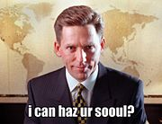
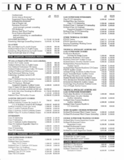

Саентология — очередной вариант духовного гербалайфа, на сей раз основанный на благодатной почве неослабевающего в массах ПГМ. Является плодом полуночного бреда американского псевдофилософа-сатаниста-наркомана Лафайета Рональда Макдональда Хаббарда, случившегося после принятия дозы закиси азота (в просторечии «веселящий газ») во время удаления зуба в 1938 году. Делится на собственно Церковь Саентологии и Свободную Зону, о которых ниже.
Довольный Рон Хаббард
Однажды ушибленному на голову[1] пейсателю-нищеброду Рону Хаббарду сильно захотелось срубить бабла на идиотах. Ввиду того, что идиотов вокруг (кто бы мог подумать?) оказалось вполне себе предостаточно, идея получилась плодотворной и быстро приобрела заданные очертания. Так как сам Ронни успешно принимал участие в одной из сект, возглавляемой известным сатанистом и основателем Телемы Алистером Кроули (cчитал, что «Сатана — не враг человека, а Жизнь, Свет и Любовь», что какбэ намекает), а все свои гениальные произведения свежевозникший Мессия черпал по преимуществу из потребляемых им веществ (сын Хаббарда свидетельствовал, что большую часть «научных откровений» его отец творил в наркотическом опьянении), то и первый высер его, «Дианетика — современная наука душевного здоровья», вышел гремучей смесью оккультизма, магии, сатанизЬма и бульварной научной фантастики — не забываем, что товарищ был полным нищебродом, а, значит, что в переходах метро продавали — с того и написал. Добавив туда же щедрой рукой кусков из популярной философии, психоанализа, необуддизма и неоиндуизма, Маэстро на выходе получил вполне оформившийся трактат про эту вот самую «Саентологию». Будучи тупым (Хаббард нихуя не знал древних языков), название придумал путём сложения латинского и греческого корней с одинаковым значением. Получилось что-то вроде «знаниезнания», что, как и остальной пласт всей этой пурги, означает ровным счетом нихуя.
Вначале Хаббард пытался продать свою дианетику как науку, но все встреченные им ученые настолько быстро фалломорфировали от демонстрируемого им бреда, что пришлось все это быстро завернуть в обертку из «религии» и уже в таком виде отправлять на поток. С тех пор про научность уже все как-то успели подзабыть, но осадочек остался: саентологи всячески пытаются придать своему учению оттенок академичности: литература саентологов насыщена самодельными специальными наукообразными терминами и сокращениями, используются компьютерные методы, тесты, графики. Однако науки там по прежнему чуть менее, чем нихуя. Все сводится к штудированию догматов, изложенных в книгах Хаббарда. Любое устное или письменное слово основателя считается «священным писанием». Реально саентология — это смесь популярной психологии, магии, оккультизма и научной фантастики, помноженная на беспрекословную веру в непогрешимость и гений отца-основателя Хаббарда, и созданной им организации.
Согласно Хаббарду, 75 миллионов лет назад некто Ксену, властелин 76 планет, собрал большую часть населения своей империи — в среднем по 178 миллиардов на каждой планете — и переместил их на Землю (как такая туева хучёвина народу смогла уместиться на Маленькой Голубой не освещается, наверняка сие есть другая «страшная тайна Хаббарда», узнав которую неподготовленный человек подвергнется немедленному самоустранению моска через носовое соплетечение в полутрадневный срок). Там он взорвал всех в вулканах при помощи водородных бомб, в результате чего духи «те́танов» оказались связанными «электронными лентами». Полностью дезориентированные в результате побоища, лишенные своих тел, «тетаны» были подвергнуты 36-дневной гипнотической «имплантации» и связаны вместе. В этих «имплантах» за 75 миллионов лет до Христа будто бы содержались планы развития всех будущих цивилизаций, и даже христианского учения. (Между прочим, они действительно в это верят) Хаббард велел хранить эту «тайну», содержащуюся в курсе ОТ-3, в строжайшем секрете, так как неподготовленный человек, случайно узнавший ее содержание, скончается в двухдневный срок. Поэтому, дорогой читатель, перед прочтением этой истины, подумай — а стоит ли? Правда, с тех пор эта история была опубликована во многих газетах и журналах, но никаких эпидемий и моровых язв за этим, конечно, не последовало.
Судами многих стран Хаббард был признан преступником, а в ряде стран объявлен нежелательной персоной. Например, в 1978 г. во Франции Хаббард был приговорен к тюремному заключению и денежному штрафу за мошенничество, но избежал наказания бегством из страны. В США Хаббард в 1977 г. попал в список виновных по делу о хищении секретных документов правительства, но не был осужден на тюремное заключение. В 1985 г. Служба внутренних доходов США расследовала финансовые мошенничества Хаббарда. От уголовного наказания Хаббард смог скрыться лишь в холодных объятьях ислама в 1986 г. Последние 10 лет он жил на своей яхте в нейтральных водах, скрываясь от налоговой полиции и, по сведениям некоторых безымянных источников, кайфовал там в обществе N-ного количества несовершеннолетних мальчиков, что опять какбе намекает нам, откуда ноги растут (читай: из жопы, да).
Из посредственного и малоимущего писателя основатель Саентологии к концу жизни превратился в мультимиллионера с состоянием в 640 миллионов долларов. А чего еще надо-то?
Деструктивная тоталитарная псевдо-религиозная секта, ставящая перед собой цель поработить всех человеков. Была создана в 1954 году. Международная Церковь Саентологии находится на самой верхушке церковной иерархии (саентологическая таблица классов, ступеней и осознания) и несёт ответственность за весь творящийся ныне пиздец общее духовное руководство и распространение саентологии. Каждая Церковь саентологии зарегистрирована как независимая корпорация и имеет свой собственный совет директоров и руководителей, ответственных за деятельность и благосостояние отдельно взятой церкви, как корпоративную, так и духовную.

Давид Мицкевич/David Miscavige
Поскольку идеальная управленческая деятельность по мнению Хаббарда должна строиться на «Этике» (доносы на товарища и постоянные наказания за провинности) и принципу «Законной Добычи» (уничтожение всех, кто не является сторонником саентологии), к концу его жизни высшее руководство секты состояло из совершенно законченных прохвостов и недоносков.
После того, как Хаббард «перешел на следующий уровень исследований ДТ» (именно так последователи называют выпил старика), его наследники мгновенно вцепились друг другу в глотки, деля властные полномочия. Разгромленное меньшинство основало т. н. «Свободную зону», а победителем вышел, как и ожидалось, наиболее ушлый и сообразительный из ребят, коренной американец Давид Мицкевич (он же Д. М.) который возглавляет церковь и сейчас. В отличие от прятавшегося по всему миру от ЦРУ на своём корабле Хаббарда, Мицкевич спокойно живёт в царской роскоши на так называемой «Золотой базе» (Gold base) саентологии в Калифорнии.
Работавшие под началом Д. М. утверждают, что Мицкевич унаследовал от отца-основателя церкви любовь к изощренным наказаниям членов секты за любые провинности. Также, будучи ЕРЖ, Давид собрался увеличить длинну полного курса «Оперирующего тетана» с 8 нынешних до 15 уровней, так как выяснилось, что на восьмом уровне деньги заканчиваются ещё не у всех.
Заявляя, что только саентологи могут стать бессмертными (избитый, но всё ещё винрарно-эффективный приём, играющий на Эстественном ТСрахе пипла перед приступами такой болезни как смерть, в своё время удачно рубил профит для христиан, мусульман и прочих кришнаитов, неоднократно послужит в будущем, я гарантирую это), Саентология предлагает широкий набор курсов (мозготрахание, читай: джэдаи) и тренировочных программ, которые она называет основным источником своего заработка мостом к полной свободе. Курсы общения и так называемый о́дитинг являются полной ересью авторскими методиками, применяемыми для поточного зомбирования широких масс идиотов. Последствия, как обычно, выше всяких ожиданий: человек может получить психическое расстройство, если сеанс одитинга не будет доведен до конца, или будет прерван. Факт наличия ломки от подобных колдунств подтверждает и сам Хаббард в своей книге «Дианетика».
Технически процесс подсечения прост и всем нам известен, строится он на принципе «первая доза бесплатно». Мающегося хуитой долбоёба, пришедшего в приход/офис саентологов принимают радушно и предлагают пройти бесплатный личностный тест на наличие-уровень-ересь тетанов с помощью странненького такого приборчика, похожего на електрический измеритель давления, называемого Е-метром. Человек мгновенноносно ведётся на приставку «free» и соглашается. Прежде всего тестирующий задаёт множество совершенно мозгоебических и, скорее всего, бессмысленных вопросов с целью вывести поциента из состояния душевного равновесия, если таковое присутствовало вообще. Под конец уставшему и уже пожалевшему обо всём поцыенту ВНЕЗАПНО сообщают, что оно находится в состоянии душевного расстройства и он ведётся, ибо чувствует себя как дерьма в рот набравши. Но ура! Ведь всё что нужно, чтобы перестать чувствовать себя УГ уже под рукой и это здоровый, не склонный к идиотизму мозг Саентология!

Таблица обязательных пожертвований. Цены в долларах.
Также, побочными способами получения профита являются «фронтовые» и дочерние организации «Церкви саентологии»: центры дианетики, гуманитарные центры Хаббарда, система Хаббард-колледжей (Административная технология Хаббарда), организации «Нарконон» (центры, провозглашающие своей целью борьбу с наркоманией) и «Криминон» (центры реабилитации осужденных), «Гражданская Комиссия по Правам Человека» (организация, которая самоотверженно борется со злыми психиатрами), гуманитарные центры детоксикации человека и прочие б-гомерзкие раковые образования на теле человечества, занимающиеся на деле стрижкой бабла и сомнительными процiдурками, сильно смахивающими на оккультизм.
Некоторые примеры медицинской и не очень деятельности саентологов:
Данный текст был спасен из загнивающей Педивикии. Пруфлинк: http://ru.wikipedia.org/wiki/Саентология
Чтобы достичь цели в «очищении» планеты, члены саентологической организации призваны занимать ключевые позиции в обществе, бизнесе и политике. В 1979 правящая верхушка Мирового Института Саентологического Предпринимательства (WISE) отметила начало плановой инфильтрации в область бизнеса. Задачей WISE является внедрение в область бизнеса стандартизованной Хаббардовской технологии управления. Целью является внедрить в каждую компанию Хаббардовскую концепцию этики и разработанную им систему контроля.
Полицией многих стран признано, что саентологическими организациями создана крупная шпионская сеть, собирающая информацию законными и незаконными методами (в том числе военного и секретного характера). Например, некоторые высшие руководители секты, включая жену Хаббарда, были осуждены в США в 1977 году за систематическое хищение секретных документов армии, флота, таможенной службы, ЦРУ, Судебной палаты и др.
Преступные действия также содержит процедура одитинга, по сути относящаяся к нелицензированной практике в психиатрии. Люди без должного базового образования, прочитав пособие, написанное такими же придурками, начинают мнить себя великими экстрасенсами после нескольких часов сомнительной тренировки. Поэтому случается, что пострадавшие сходят с ума или у них возникают непредсказуемые последствия (вплоть до попыток самоубийства) после нескольких сеансов одитинга, рекламируемых саентологией как абсолютно безопасные.
Анонимусы — против мозгоебизма
Ведется с переменным успехом, зато повсеместно. Также хорошо известна широкомасштабная травля саентологов анонимусом.
Не забыли присоединиться к ней и некие Концептуально Властные структуры. Внутренний Вредиктор СССР отъимел саентологов длинным интеллектуальным фаллосом по части их теории управления и пожелал приятного захвата мира в (sic!) русле Библейской культуры… Неиллюзорно можно убедиться, посмотрев работу ВП СССР «Приди на помощь моему неверью… (О дианетике и саентологии по существу: взгляд со стороны)».
Неудачная попытка захватить мир такая неудачная.
Данный текст был спасен из загнивающей Педивикии.
Пруфлинк: http://ru.wikipedia.org/wiki/Церковь_Саентологии
Выделилась из ЦС в результате раскола в начале 1980-х годов и не признаётся Церковью как исповедующая саентологию. Является кучкой рЫволюцеонеров и деятелей умственного труда, прихуевших от количества догматов и пославших правила ЦС в далекие розовые дали. А в остальном — такие же сумасшедшие, увы.
В разное время под каток саентологов попали:
Передо мной стояла проблема выбора: куда пойти – в Общество Сознания Кришны или в засекреченный филиал Аум Синрике. Поколебавшись немного, я решил для начала отправиться на разведку в центр Дианетики, который находился в подворотне через дорогу от моего дома. Там в любое время года, в дождь и град на боевом посту дежурили зазывалы центра с билетами и листовками, а также их коллега – бойкий подросток с порошочками и ампулами. Шифруясь под полного обсоса (что в общем-то не потребовало особых усилий) я прогулочной походкой направился к заветной подворотне. - Молодой человек, хотите сходить на лекцию о благополучной семейной жизни? Заодно вы сможете бесплатно пройти тестирование личности! – без особого энтузиазма начала обрабатывать меня тетка лет 30-ти с фиолетовыми волосами. - Ой, что вы говорите, бесплатное тестирование личности! Ну конечно же хочу! – незамедлительно отреагировал я. Глаза тетки сразу же загорелись, она подмигнула своему напарнику и повела меня какими-то стремными дворами в “Центр”. “Вот так вот и пропадают люди”, - услышал я напоследок голос собственного разума.
Внутри мне сказали, что лекция начнется через двадцать минут, а пока я должен заполнить тест личности. Вопросов в тесте оказалось всего ничего - 200 штук, причем все были из цикла “Иногда я хочу убить своих родителей: да, нет, может быть”. Также к тесту незатейливо прилагалась анкета, в которой я должен был указать подробную инфу о себе. Смахнув слезу умиления, я написал в анкете “Акакий Сигизмундович Бздрищенко. Проживаю под мостом. Род деятельности: работорговля.” и расставил галочки в тесте так, чтобы они в совокупности образовывали известное тебе неприличное слово. Сэкономив таким образом время, я осмотрелся по сторонам: повсюду развешаны портреты Рона Хаббарда и постеры его книг, здесь же открыта лавочка по их продаже. Одни люди разговаривают друг с другом и что-то пишут, другие пристально за этим наблюдают. Удивило, что почти все посетители были очень молоды – не старше 25 лет. Лишь в углу две 40-летние тетки обсуждали свои достижения на ниве сайентологии: - А мне соседки и говорят: тебя секта заграбастала, теперь ты от них никуда не денешься. Вот дуры, зачем мне куда-то деваться, когда я уже почти прошла вторую ступень! - Я вам, Валентина Егоровна, так скажу: Хаббард был великим человеком и открыл нам единственно верный путь. Мы отклирим всю Россию! Тетки мерзко засмеялись, и тут же одна из них объявила о начале лекции.
Лекция представляла из себя популярный рассказ о том, что такое сайентология и как она поможет мне в семейной жизни и самосовершенствовании. Сайентология оказалась вольным изложением Фрейда для идиотов, а также смесью притянутых за уши фактов и откровенного бреда. Тетка-лекторша несколько раз запалилась, благоговейно произнеся: “Так говорил Хаббард” и “Великий Хаббард!”. Хотя, надо отдать ей должное, раньше она явно обучалась на курсах “Как разводить лохов” и от сомнительных постулатов быстро перешла к вопросам залу типа: “И как, с точки зрения сайентологии, здесь надо поступить?”. Всех ответивших она нахваливала так, что те разве что ни визжали от восторга. Надо сказать, публика собралась специфическая: по большей части параноики и тупые уроды. Особенно мне запомнился дядя с тиком под правым глазом и большой сумкой, который на вопрос: “Зачем человеку нужен разум?” ответил, что: “Разум нужен человеку, чтобы отличаться от животного”, а также зачем-то поведал всем присутствующим, что, по его мнению, детского писателя Волкова после написания книжки “Урфин Джюс и его деревянные солдаты” похитили пилоты НЛО. Хотя был среди собравшихся и один интеллигентный молодой человек в дорогом костюме, который сказал, что уже прочитал книгу “Дианетика” и решил посвятить самосовершенствованию всю оставшуюся жизнь, потому что учение Хаббарда всесильно ибо оно верно! Всю лекцию меня не покидало ощущение, что кто-то упорно имеет мой мозг во все щели, под конец же выступления сектантки мне даже стали глубоко симпатичны идеи сайентологов, а Рон Хаббард казался отцом родным. По окончании лекции тетка предложила всем купить книгу “Дианетика”, что половина присутствующих тут же и сделала. Потом меня пригласили на индивидуальную консультацию, где показали удручающие результаты теста и сказали, что если я не буду посещать семинары сайентологов и не подвергнусь одитингу (психическому очищению, тобишь) за “символический” членский взнос, то будет мне сплошное несчастье и скрежет зубов. Такие же плачевные результаты были и у остальных посетителей. После этой милой консультации я вдруг почему-то страстно захотел купить какую-нибудь книгу Хаббарда, но меня спасла врожденная жадность, которая и заставила немедленно убежать из центра.
— Даня Шеповалов. «В гостях у секты»